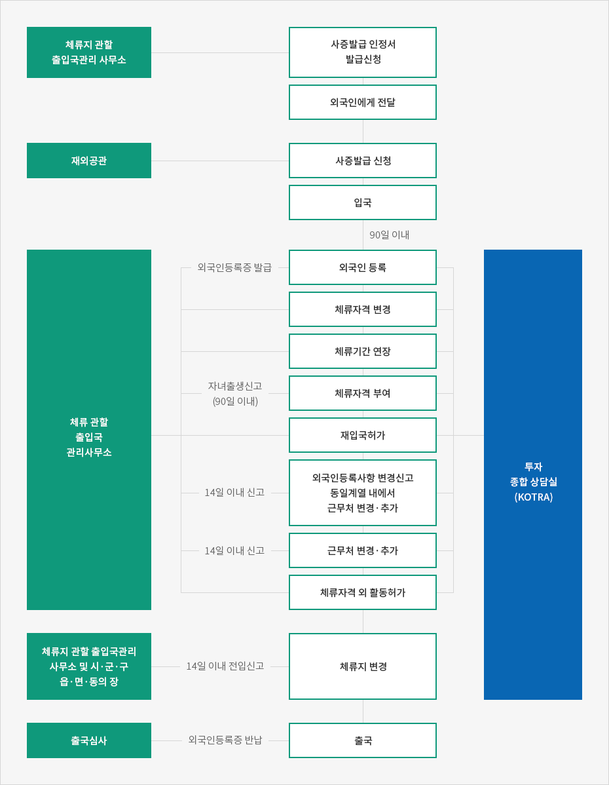

기업투자 사증발급 및 체류절차
- Home
- 투자의 시작
- 비자·체류
- 기업투자 사증발급 및 체류절차


Investment Consulting Center [ICC, KOTRA]

사증발급
절차
사증발급의 권한은 법무부 장관에게 있으나, 대통령령으로 범위를 정하여 재외공관의 장에게 위임할 수 있다. 이에 따라 외국인의 입국은 사증을 재외공관장에게 신청하여 발급 받는 방법, 단기방문사증 보유자 또는 사증 면제국가의 외국인인 경우 입국 후 출입국심사를 통해 체류자격과 기간을 부여받는 방법, 그리고 초청자의 주소지 관할 지방 출입국·외국인관서에서 사증발급인정서(또는 인정번호)를 발급받아 재외공관에 제시하고 사증을 발급받는 방법이 있다.사증발급 방법
- 재외공관장에게 사증을 신청하여 발급 받는다.
재외공관장 사증 발급 범위 : 법무부 장관이 위임한 사증만 가능하며 주로 단기체류 사증이다. - 입국하고자 하는 외국인이 직접 신청하여 발급받거나 국내초청자가 본인의 주소지 관할 출입국·외국인 관서에 신청하여 인정서 또는 발급 번호를 받는다. 후자의 경우 입국하고자 하는 외국인이 사증발급신청서에 사증발급인정 번호를 기재하여 재외공관장에게 제출해 사증을 발급받는다.
- 단기방문 사증 보유 또는 무사증 입국 후 출입국·외국인 관서에서 체류자격(D-8 등)을 변경한다.
※ 사증발급인정신청서의 인정유효기간 : 3개월
외국인등록
91일 이상 장기사증을 소지하고 입국한 외국인은 입국한 날로부터 90일 이내에 그의 체류지 관할 지방 출입국·외국인관서에 외국인등록을 신청해야 한다.체류자격 변경
외국인이 기존에 승인받은 체류자격에 해당하지 않는 다른 활동을 하기 위해서는 미리 체류자격 변경허가를 받아야한다. 변경허가를 받지 않은 채 체류자격에 해당하지 않는 활동을 하다 적발되면 2천만 원 이하의 벌금에 처하거나 강제 퇴거될 수 있다.변경 시 신고사항
근무처 변경
외국인이 체류자격 범위 내에서 그의 근무처를 변경하거나 추가하려면 미리 근무처변경 및 추가 허가를 받아야 한다. 다만, 전문적인 지식 · 기술 또는 기능을 가진 사람은 (E-1~E-7 사증소지자) 그의 근무처를 변경하거나 추가한 날로부터 15일 이내에 신고만 하면 된다. 근무처 변경 및 추가 허가를 받지 않고 외국인을 고용하거나 알선하다 적발되면 1천만 원 이하의 벌금에 처하거나 강제 퇴거 될 수 있다.체류자격외 활동
체류자격에 해당하는 활동과 병행하여 다른 체류자격에 부수되는 활동을 하려면 미리 체류자격외 활동 허가를 받아야 한다. 체류자격외 활동 허가 위반 시에는 2천만 원 이하의 벌금에 처하거나 강제 퇴거 될 수 있다.체류지 변경
등록외국인이 그 체류지를 변경한 때에는 전입한 날로부터 14일 이내에 새로운 체류지의 시 · 군 · 구의 장 또는 읍 · 면 · 동의 장이나 그 체류지를 관할하는 지방 출입국 · 외국인 관서의 장에게 체류지 변경신고를 해야 한다. 미신고 시 100만 원 이하의 벌금에 처한다.외국인을 고용한 기업주의 신고의무
취업활동 자격이 부여된 외국인을 고용한 자가 외국인을 해고하거나 외국인이 퇴직, 사망한 때, 외국인의 소재를 알 수 없게 된 때, 고용계약의 중요한 내용을 변경한 때에는 그 사실을 안 날로부터 15일 이내에 지방 출입국 · 외국인관서의 장에게 신고하여야 한다. 미신고 시 200만 원 이하의 과태료에 처한다.※ 출처 : 알기 쉬운 외국인고용과 비자 실무가이드(박길남 · 정봉수, 강남노무법인刊)